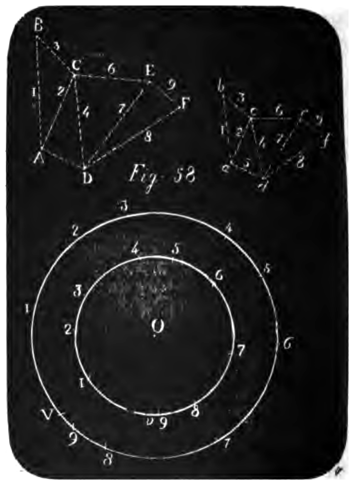

§§ 124–127: Costruzione di figure simili in data ragione di aree (Fig. 58)¶
LIBRO NONO — DELLE FIGURE SIMILI E DEI POLIGONI REGOLARI
124. Avv. Quando diremo: costruire una figura o un poligono, intenderemo di dire: trovare tutti que’ punti, che bastano a determinare la posizione e la grandezza di quelle rette, che si devono guidare per costruire interamente il poligono.
125. Prob. Sopra un dato lato \(ab\) (fig. 51) costruire un triangolo simile a un dato triangolo \(ABC\).
Sol. Vedi il § 115.
126. Prob. Costruire una figura simile ad una data (fig. 58) \(ABCEFD\), che abbia un dato rapporto di area con essa.


Sol. Si voglia per esempio, che la nuova figura abbia due quinti di area della figura data. Con un raggio \(AB\), il maggiore che si possa comodamente, si costruisca la figura 43 (§ 100). Presa da essa figura la \(Aa = \sqrt{2}\) per raggio, e fatto centro in \(O\) (fig. 58), si descriva il cerchio minore, nella di cui circonferenza è il punto \(v\).
Presa dalla fig. 43 la \(ET = \sqrt{5}\) per raggio, collo stesso centro \(O\) si descriva il cerchio
f. 0094 · p. 69maggiore, nella di cui circonferenza è il punto \(V\), il quale si marchi in tal luogo per rapporto al punto \(v\), che la \(Vv\) riesca press’a poco tangente al cerchio interno in \(v\).
Si supponga divisa la figura data in tanti triangoli \(ABC\), \(ACD\), \(CDE\), \(EDF\), immaginandovi delle rette \(AC\), \(CD\) ecc.
Si pongano dei numeri \(1, 2, 3, 4, 5\), ecc. alle distanze \(AB\), \(AC\), \(BC\), \(CD\), ecc., che misurano i lati di questi triangoli.
Si applichino queste distanze \(1, 2, 3\) ecc. successivamente come corde a tanti archi successivi del cerchio \(V\), cioè la \(AB\) da \(V\) in \(1\); la \(AC\) da \(1\) in \(2\); la \(BC\) da \(2\) in \(3\), ecc. fino in fine; il che si fa prendendo la distanza \(AB\) per raggio, e fatto centro in \(V\), tagliando questa stessa circonferenza con un arco in \(1\), ecc.
Colla distanza \(Vv\) presa per raggio si faccia centro successivamente nei punti \(1, 2, 3, 4\), ecc., e si descrivano degli archi, che taglino successivamente la circonferenza minore in \(1, 2, 3, 4\), ecc. fino in fine.
Le corde del cerchio interno, ossia le distanze da \(v\) ad \(1\), da \(1\) a \(2\), da \(2\) a \(3\), da \(3\) a \(4\), ecc. saranno i lati \(ab\), \(ac\), \(bc\), \(cd\), ecc. della nuova figura, la quale si costruirà triangolo per triangolo. Colla distanza da \(v\) in \(1\) si marcheranno i due punti \(ab\). Coi centri \(a\) e \(b\), e colle distanze seconda e terza prese dal cerchio interno (la seconda è dall’1 al 2; la terza dal 2 al 3) si segneranno due archi, che si taglino in \(c\). Coi centri \(c\) ed \(a\), e colle distanze quarta e quinta prese dal cerchio interno (la quarta è dal 3 al 4, la quinta dal 4 al 5) si segneranno due archi, che si taglino in \(d\). Nella stessa maniera si troveranno i punti \(e\) ed \(f\), e sarà costruita la figura.
Dim. Le corde del cerchio interno stanno alle rispettive corde del cerchio esterno, come sta il raggio \(Ov\) al raggio \(OV\) (§ 93), cioè come \(\sqrt{2}\) sta a \(\sqrt{5}\). Dunque nella stessa ragione stanno tutti i lati dei triangoli della figura \(abcefd\) ai rispettivi lati dei triangoli della figura \(ABCEFD\). Dunque i triangoli delle due figure sono tra loro equiangoli e simili (5, lib. VI, def. 1ª). Dunque le due stesse figure poligone sono simili (20, lib. VI), ed essendo la proporzione, ossia ragione delle aree dei poligoni duplicata della ragione dei lati (ivi); sarà l’area del poligono \(abcefd\) all’area \(ABCEFD\) come \(2\) a \(5\). Sarà dunque
f. 0095 · p. 70l’area della figura minore eguale a due quinti della maggiore.
Da quest’esempio si vede cosa si dovrà fare, qualunque altro sia il rapporto, nel quale si voglia, che l’area della figura da costruirsi sia alla data. Si descriveranno due circonferenze \(v\) e \(V\), i raggi delle quali staranno tra loro nel rapporto delle radici dei numeri, che formano il rapporto delle aree. Nella circonferenza, che corrisponde alla figura data, si porranno successivamente per corde i lati dei triangoli, nei quali si suppone divisa la figura data. Per via di queste col metodo indicato si troveranno delle corde proporzionali nell’altra circonferenza. Queste saranno i rispettivi lati dei triangoli della nuova figura.
Il rapporto delle mezze radici e delle intere essendo lo stesso, servirà in molti casi la fig. 45 (§ 104). Per gli altri casi vedi i §§ 101, 102 e 103.
Si sceglie poi un raggio \(AB\), che sia il possibile maggiore comodamente (fig. 44 e 45), perchè i due cerchj sieno meglio capaci delle grandezze delle corde da applicarvisi, e perchè le intersezioni, che ne nascono, faccian angoli più vicini al retto.
127. Se il rapporto fosse dato tra i lati \(AB\) ed \(ab\) di essi tra loro, o di qualunque altre due rette fra loro; in questo rapporto si sceglierebbero i due raggi \(OV\), \(Ov\), i maggiori possibili.